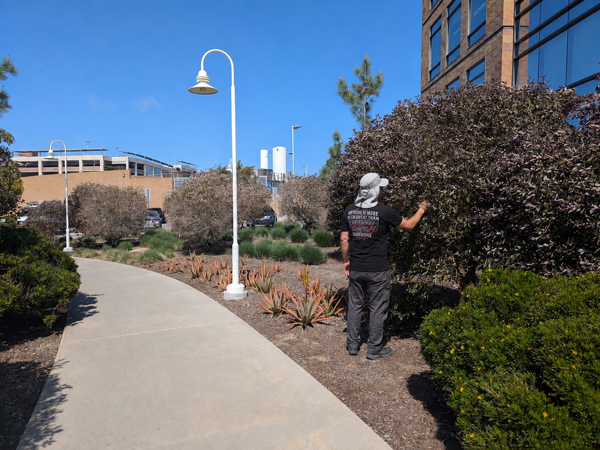
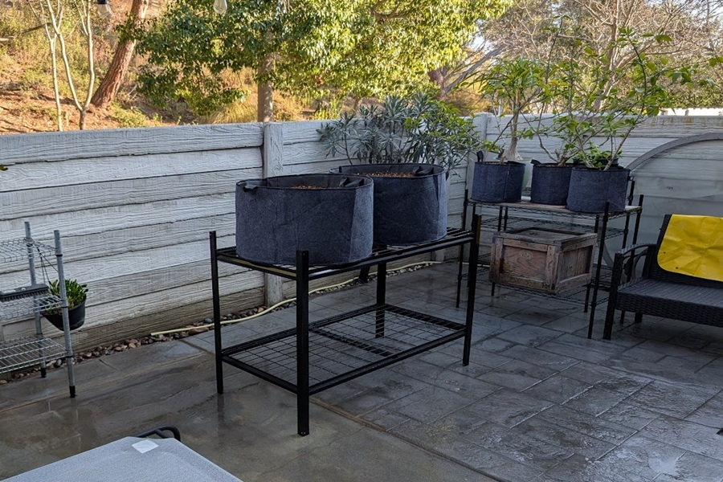
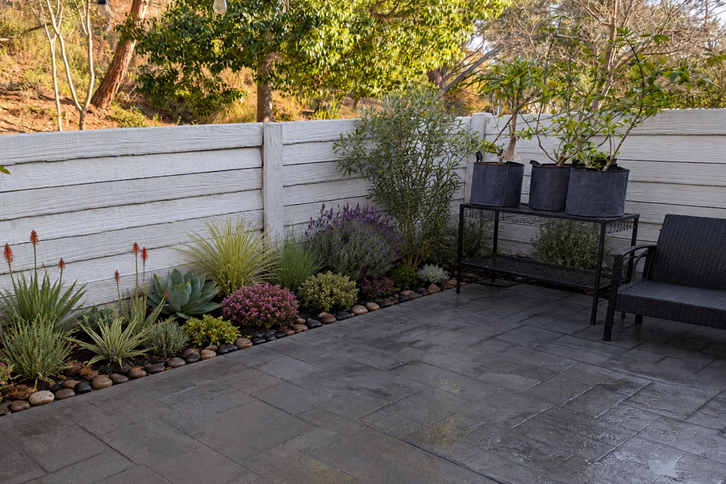
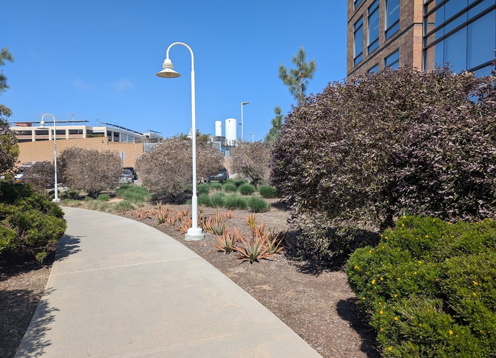
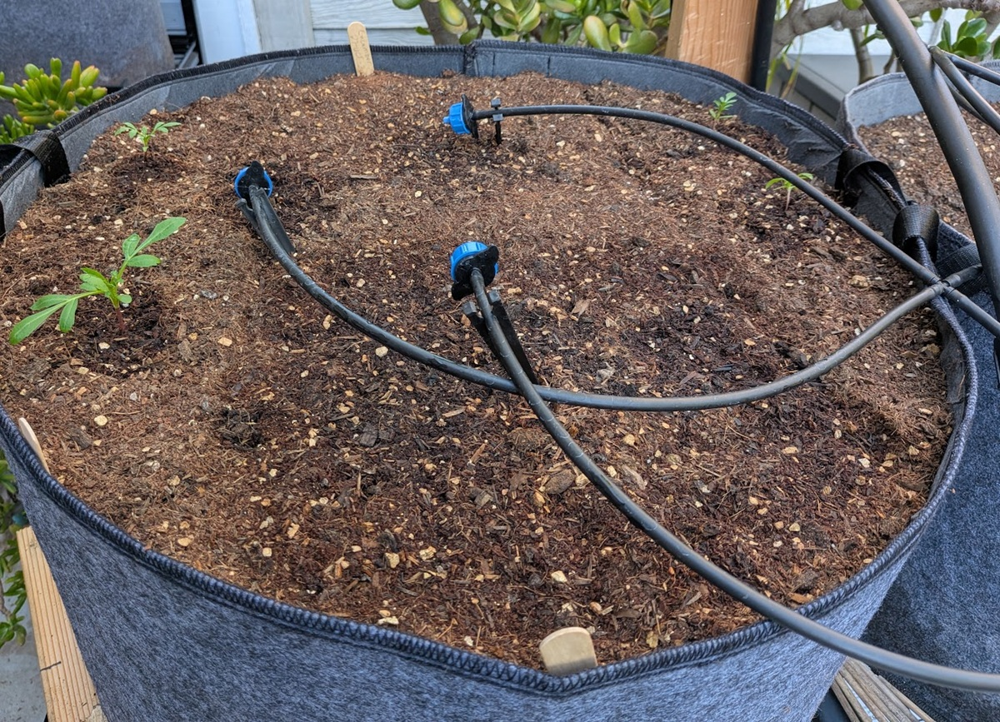

Routine garden maintenance
Ongoing care including pruning, weeding, cleanup, deadheading, plant health checks, and seasonal garden upkeep.
Garden maintenance in Poway and nearby communities
Noah Knows provides experienced garden maintenance, practical irrigation help, and plant care built around the light, water, wind, and wildlife needs of each space.
Request a free estimateI have 14 years of experience providing dependable maintenance and practical problem-solving for established gardens, water-conscious landscapes, and wildlife-friendly outdoor spaces.
Ongoing care including pruning, weeding, cleanup, deadheading, plant health checks, and seasonal garden upkeep.
Minor irrigation repairs, layout guidance, and adjustments to help water reach the right plants without unnecessary waste.
Recommendations for plants suited to the site's sun, shade, wind, soil, available water, and surrounding landscape.
California native and water-conscious plant choices that support pollinators, birds, and other local wildlife.
Practical recommendations for reducing conditions that attract rats, mice, and other unwanted pests.
Focused updates that improve plant health, appearance, and long-term maintainability without redesigning the entire property.
I have 14 years of hands-on gardening experience, and I believe successful landscapes begin with paying attention to the actual conditions of the site. Rather than treating every yard as interchangeable, I consider water availability, sun exposure, wind, soil, existing plants, and local wildlife before recommending changes.
My approach emphasizes healthy plants, sensible maintenance, California natives, and water-conscious gardens that can thrive over time.



Replaced a strip of hardscape with drought-tolerant planting to soften the patio, reduce heat, and create a more inviting low-water garden.

Maintained and shaped a water-conscious landscape with plant choices suited to the site's sun, soil, and irrigation conditions.

Adjusted and repaired a small drip-irrigation layout to improve coverage, reduce water waste, and better support the surrounding plants.
I primarily serve Poway, Rancho Bernardo, and the Scripps Poway area. I may also consider projects elsewhere in San Diego County depending on the work involved.
I do not provide whole-site irrigation installation, turf installation, or artificial grass installation.
Email me a short description of the garden, the location, and the kind of help you are looking for.
Email meEmail is the preferred contact method. Text messaging is not available.